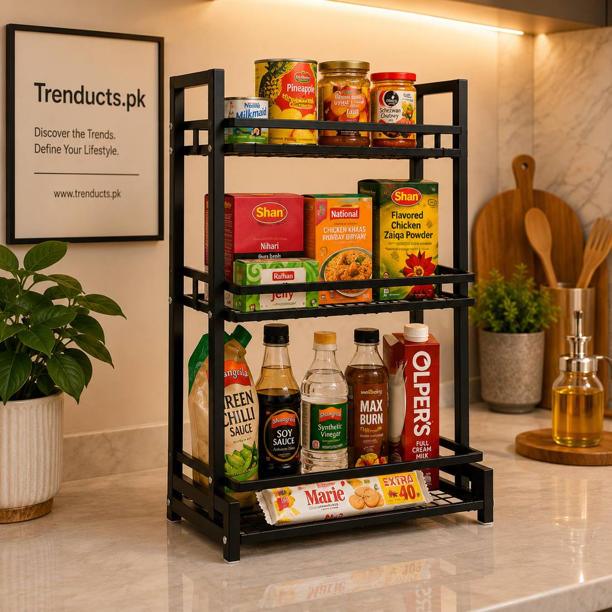
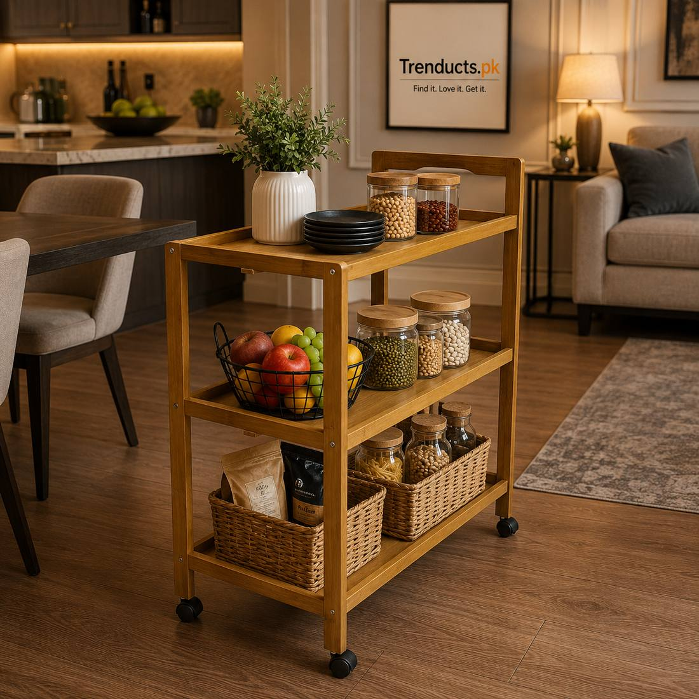

If you rent a flat in Pakistan, you probably know the feeling: the kitchen has two small cabinets, one of which has a broken hinge, a narrow counter beside the stove and no space for the microwave. Landlords rarely allow drilling, and you do not want to spend money on fittings you will leave behind when you move. Yet you still need somewhere to put pots, spices, crockery and the monthly grocery.
Freestanding trolleys and racks are the answer. They add storage instantly, roll or carry to your next home, and need no tools or permission. This guide explains how to use them well.
Measure before you buy
Measure every free space in the kitchen: the gap between the fridge and the wall, the corner beside the stove, the space under the window, and the height under the counter if there are no cabinets. Even a 20 cm gap can take a slim rolling cart. Write the measurements on your phone so you have them while shopping. A rack that is two centimetres too wide is useless.
Rolling trolleys for flexibility
A rolling trolley with three or four tiers is the most versatile addition to a small kitchen. Use it for vegetables and fruit on the bottom, spices and oils in the middle, and daily items like tea, sugar and bread on top. Wheels let you pull it next to the stove while cooking and push it aside to clean. Bamboo trolleys look warm and natural, while stainless steel and metal ones handle heat and moisture well. Foldable multi-layer versions can store snacks or be moved to the lounge for guests.

Countertop racks for vertical space
When counter space is scarce, build upward. A multi-tier countertop rack holds spices, small jars, and cups in the footprint of a single plate. Place it in the corner of the counter where nothing else fits. Over-the-sink racks, which stand on legs over the basin, add a full shelf for drying dishes without any installation. Browse kitchen racks and trolleys to see which designs suit narrow kitchens.
Use the walls without nails
Adhesive hooks and suction holders hold light items such as ladles, oven gloves, kitchen towels and a small paper towel roll. Magnetic racks stick to the side of the fridge for spices or knives. Tension rods placed inside a cabinet create a second level for lids and cutting boards. All of these leave the walls untouched and come off easily when you move.
Organise by frequency
Storage only helps if it is organised sensibly. Keep items you use daily, such as tawa, pressure cooker, spices, oil and tea, within arm's reach of the stove. Put weekly items, like the rice cooker or the large pot for biryani, in harder-to-reach spots. Store seasonal items, such as the Eid serving dishes or the extra crockery for dawats, outside the kitchen entirely, perhaps under a bed in airtight boxes.

Keep it clean and pest-free
Open racks and trolleys collect grease and dust quickly, especially near the stove. Wipe them weekly with warm soapy water. Store dry goods like flour, rice and daal in airtight containers to keep away weevils, ants and cockroaches, which are common in older buildings. Leave a small gap behind trolleys so you can clean the floor and walls behind them.
Packing up when you move
One of the best things about freestanding storage is that it moves with you. Keep the boxes or assembly instructions for foldable pieces. When moving, empty and wipe everything, remove wheels if possible, and wrap shelves in old sheets. In your next flat, the kitchen is organised within an hour.
A sample setup for a tiny kitchen
- One four-tier rolling trolley beside the fridge for vegetables, oils and spices
- One countertop rack for daily jars and cups
- An over-sink rack for drying dishes
- Adhesive hooks for towels and ladles
- Under-shelf baskets in the cabinet for small packets
Final thoughts
A small rented kitchen does not have to be chaotic. Measure carefully, choose rolling trolleys and countertop racks, use the walls without drilling, and organise by frequency. You get a kitchen that works today and storage that moves with you to your next home.